Configure Intune
The following sections cover how to configure Intune for Device Certificate Enrollment.
Prerequisite: Set up Intune
Before configuring Intune for Device Certificate Enrollment, it is assumed that Intune is set up according to instructions in the Microsoft doc Set up Intune.
Configure Intune for Device Certificate Enrollment
Follow the steps outlined below to configure Intune for Device Certificate Enrollment:
Add a Test User
As an administrator, you can add users that once added can enroll devices and access company resources.
Follow the steps below to add an Intune test user.
Log in to Intune (https://aka.ms/intuneportal).
Select Users, and then click New user.
On the User page, specify the required information and then click Create.
Name: Specify a name. In this example, SCEP User.
User name: The user name of the new user. In this example, scepuser@c2company.com.
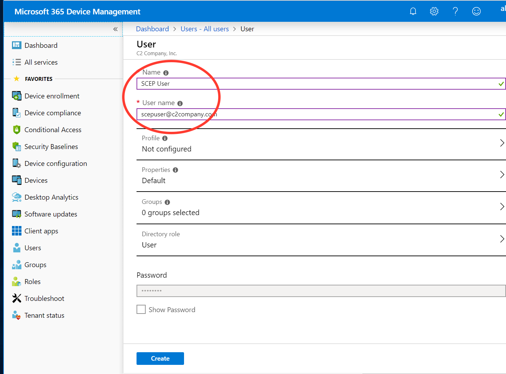
Add a Test Group
Use the following steps to create a new group.
Select Groups and then click New group in the All groups pane.
On the New Group page, specify the following and then click Create.
Specify a Group name. In this example, SCEPTEST.
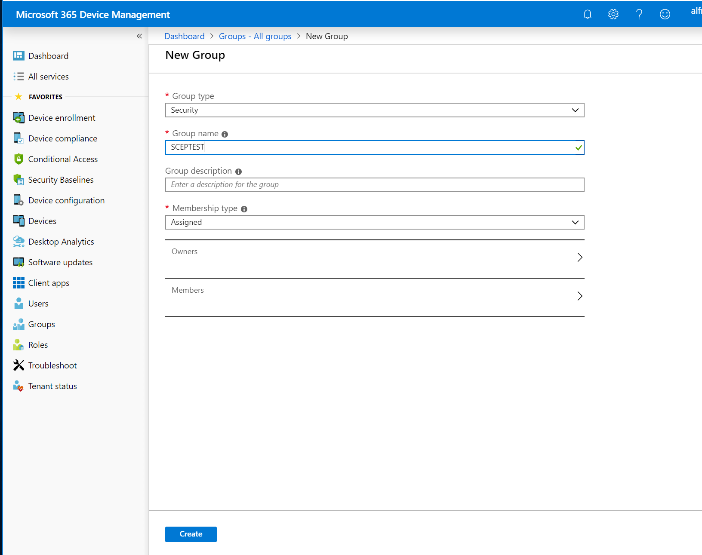
To add members to the group, select Members and click Add Members.
Select the SCEP User and then click Select to add the member.
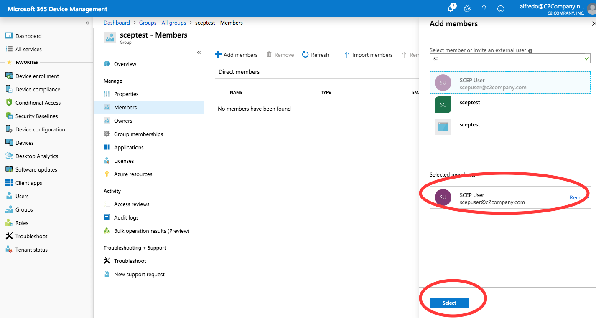
Assign an Intune License to the User
You must assign each user an Intune license before users can enroll their devices in Intune.
Use the following steps to assign an Intune license to the added user.
Click Users, select the added SCEP User, and then click Licenses.
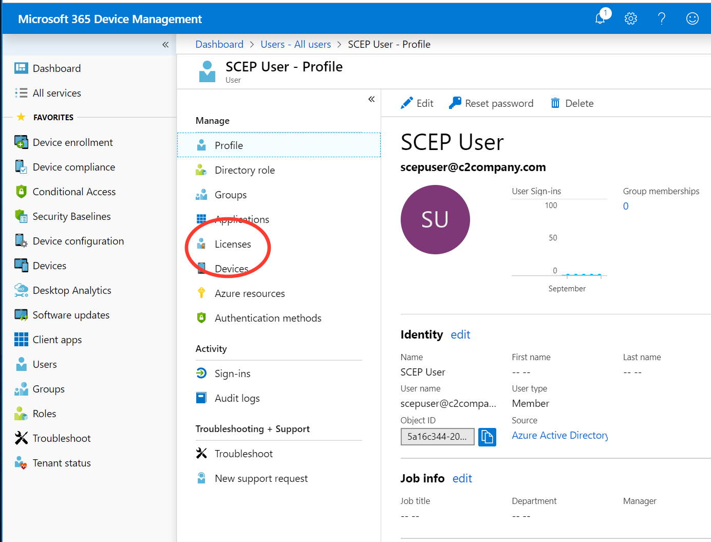Click Assign and then on the Assign license page, select Products Configure required settings.
Select the Intune product, click Select and then click Assign.
Authorize Communication between CA and Intune
To allow a third-party SCEP server to run custom challenge validation with Intune, create an app in Azure Active Directory (AD). This app gives delegated rights to Intune to validate SCEP requests. For more information, refer to the Microsoft doc Set up third-party CA integration.
To authorize communication between EJBCA and Intune, create an application in Azure Active Directory, following the steps below.
Log in to the Azure Portal (https://portal.azure.com/).
Select Azure Active Directory > App Registrations, and then click New registration.
On the Register an application page, specify the following:
Enter a Name of the application, for example, SCEP_API_registration.
In Supported account types, select Accounts in any organizational directory.
For Redirect URI, leave the default of Web, and then specify the URI of the Intune EJBCA Connector, in this example https://<fqdn>/intune-ejbc-connector/scep.
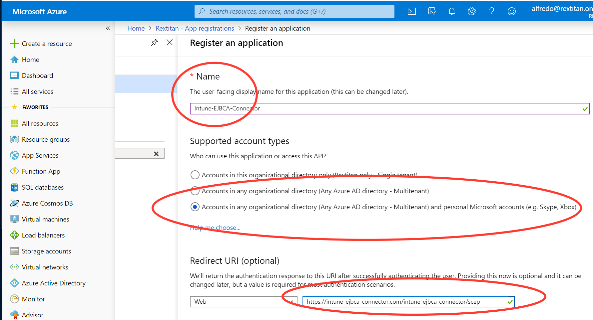
Click Register to create the application and to open the Overview page for the new app.
On the app Overview page, take note of the Application (client) ID as you will need this value later.
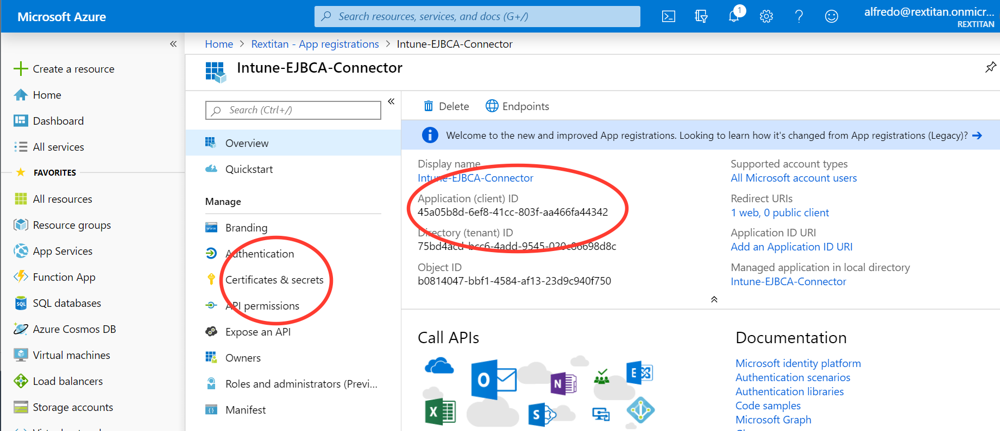Select Certificates & secrets under Manage, and click New client secret.
Specify a Description, select any option for Expires, and then click Add to generate a value for the client secret.
Take note of the new client secret value before you leave the page.
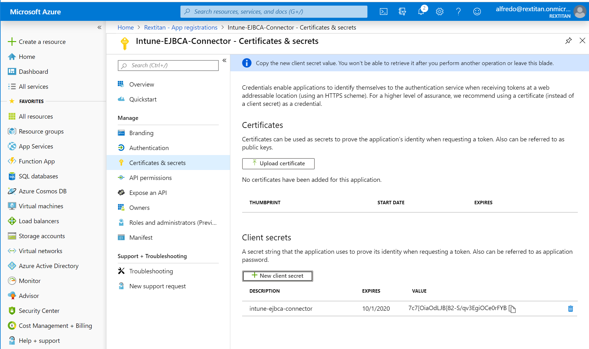Record your Tenant ID. The Tenant ID is the domain text after the @ sign in your account. For example, if your account is admin@name.onmicrosoft.com, then your tenant ID is name.onmicrosoft.com.
Select API permissions under Manage, and then click Add a permission.
On the Request API permissions page, select Intune, and then click Application permissions.
Select the permission scep_challenge_provider (SCEP challenge validation), and click Add permissions to save the configuration.
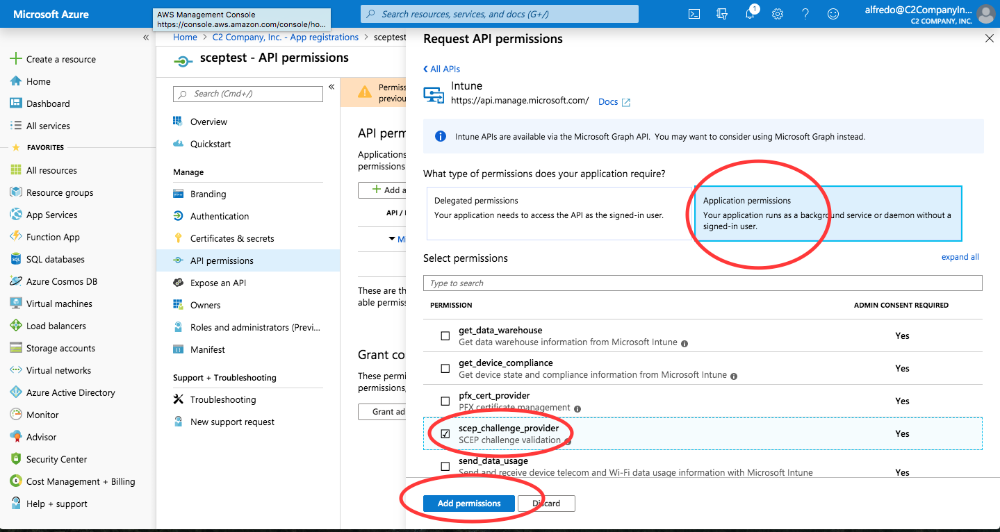On the API permissions page under Grant consent, click Grant admin consent for <Tenant name>, and then click Yes in the confirmation panel.
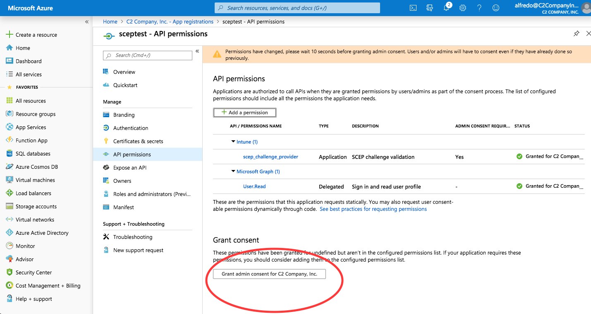
Configure Intune for Windows 10
To configure Intune for Windows 10 Device Enrollment, do the following:
Log in to the Intune portal (https://aka.ms/intuneportal).
Select Device enrollment.
If not already configured, you will be prompted to choose the Mobile Device Management Authority (MDM Authority). For this example, select Intune MDM Authority, and then click Choose.
Select Windows enrollment under Manage, and click AutomaticEnrollment.
On the Configure page, change the MDM user scope to Some, select group sceptest, and then click Save to store the configuration.
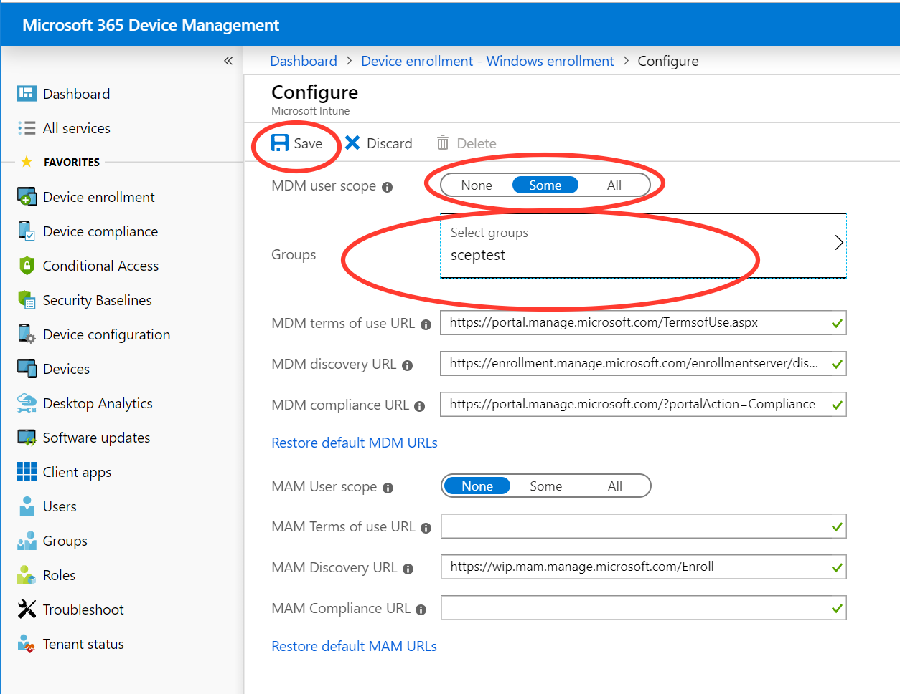
Configure Intune Trusted Certificates and SCEP Certificate Profile
The following provides steps to follow to configure the different Intune Trusted Certificates and the SCEP Certificate Profile.
Create Trusted Certificate Profile for EJBCA Root CA
Follow the steps below to create the Trusted Certificate Profile for the EJBCA Root CA:
Select Device configuration, then select Profiles under Manage, and click Create profile.
On the Create profile page, specify the following:
Enter the profile Name: WIN10_RootCA_Cert.
For Platform, specify Windows 10 and later.
For Profile type, select Trusted certificate.
Click Settings:Configure, upload the EJBCA Root Certificate in DER format, select the Destination store=Computer certificate store - Root, and then click OK.
Select Assignments under Manage, and then click Select groups to include.
On the Select groups to include panel, select the sceptest group, click Select, and then click Save.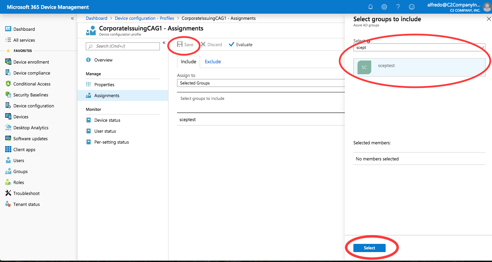
Create Trusted Certificate Profile for EJBCA Issuing CA
Follow the steps below to create the Trusted Certificate Profile for the EJBCA Issuing CA:
Select Device configuration, then select Profiles under Manage, and click Create profile.
On the Create profile page, specify the following:
Enter the profile Name: WIN10_IssuingCA_Cert.
For Platform, specify Windows 10 and later.
For Profile type, select Trusted certificate.
Click Settings:Configure, upload the EJBCA Issuing CA Certificate in DER format, select the Destination store=Computer certificate store - Intermediate, and then click OK.
Select Assignments under Manage, and then click Select groups to include.
On the Select groups to include panel, select the sceptest group, click Select, and then click Save.
Create Trusted Certificate Profile for EJBCA RootCA in Computer Certificate Intermediate Store
The certificates are added to the Windows 10 computer certificate Trusted Intermediate store. In order for the Root CA to be removed from the Windows 10 computer certificate Trusted Intermediate store when the device is removed from Intune, the following profile will need to be added.
Follow the steps below to create the Trusted Certificate Profile for the EJBCA RootCA in the Computer certificate store - Intermediate:
Select Device configuration, then select Profiles under Manage, and click Create profile.
On the Create profile page, specify the following:
Enter the profile Name: WIN10_RootCA_Cert_Intermediate.
For Platform, specify Windows 10 and later.
For Profile type, select Trusted certificate.
Click Settings:Configure, upload the EJBCA Issuing CA Certificate in DER format, select the Destination store=Computer certificate store - Intermediate, and then click OK.
Select Assignments under Manage, and then click Select groups to include.
On the Select groups to include panel, select the sceptest group, click Select, and then click Save.
Create SCEP Certificate Profile
Follow the steps below to create the SCEP Certificate Profile:
Select Device configuration, then select Profiles under Manage, and click Create profile.
On the Create profile page, specify the following:
Enter the profile Name: WIN10_SCEP_certificate_profile.
For Platform, specify WIndows 10 and later.
For Profiletype, select SCEP Certificate.
Click Settings:Configure, and specify the following:
Certificate type: Device.
Subject name format: CN={{Device_Serial}}
If a DN structure is configured in the EJBCA End Entity Profile the structure must be asserted in the Subject Name Format. e.g., CN={{Device_Serial}},OU=Intune Devices,O=PrimeKey,C=SE
Certificate validity period: 1 Year.
Key storage provider (KSP): Enroll to Trusted Platform Module (TPM) KSP if present, otherwise Software KSP.
Key usage: Digital signature and Key Encipherment.
Key size: 2048.
Hash algorithm: SHA-2.
Root Certificate: WIN10_RootCA_Cert.
Extended key usage: Select Predefined values=Client Authentication to populate the Name and Object Identifier fields, and then click Add.
SCEP Server URLs: Specify https://<fqdn>/ejbca/publicweb/apply/scep/<EJBCA SCEP Alias>/pkiclient.exe to be the URI of EJBCA, and then click Add.
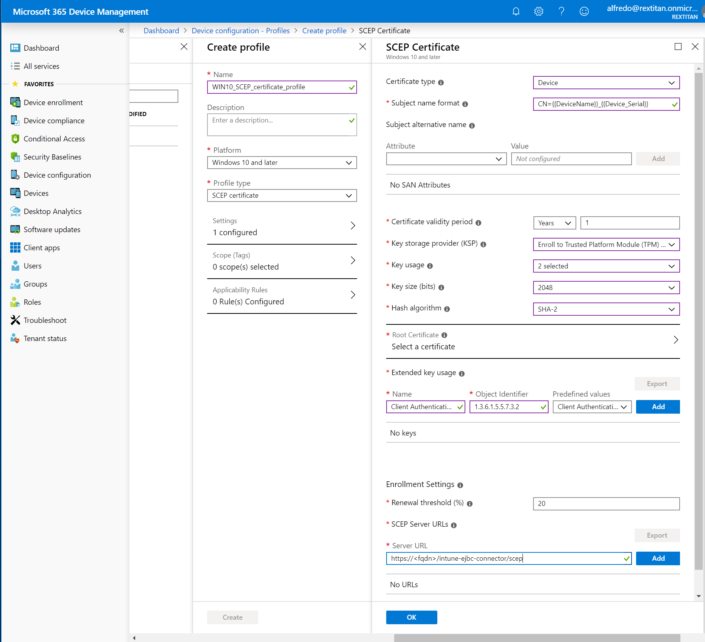
Select Assignments under Manage, and then click Select groups to include.
On the Select groups to include panel, select the sceptest group, click Select, and then click Save.